Keychain
概要
ご覧頂きありがとうございます。 Keychainは以下の特徴を持ったキースイッチ型ストラップの組み立てキットです。
- ソケット式のためお好みのキースイッチ、キーキャップを利用可能
- スイッチ押下時に光る
- お好みに合わせて選べるLED
Notice
こちらのキットはハンダゴテを使用してご自身で組み立てるキットになります。
ビルドガイド
同梱品の確認
商品がお手元に到着しましたら以下のものが同梱されているかご確認ください。
| 品名 | 個数 | 写真、備考 |
|---|---|---|
| PCB | 1 |  PCB横の切れ込みは右側になることもあります。 PCB横の切れ込みは右側になることもあります。 |
| 抵抗 | 1 |  |
| チップLED | 2 |  1つは壊れたときの予備 1つは壊れたときの予備 |
| スイッチ用PCBソケット | 1 | 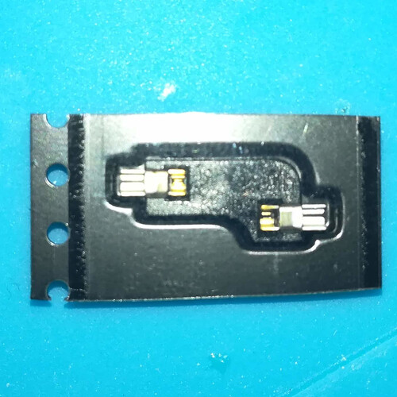 |
| ボタン電池 | 1 | 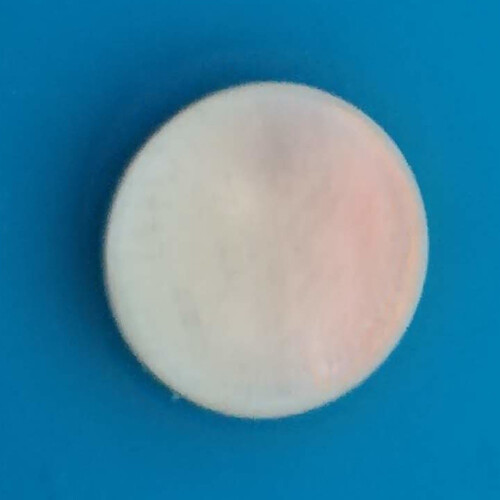 |
| ボタン電池ソケット | 1 | 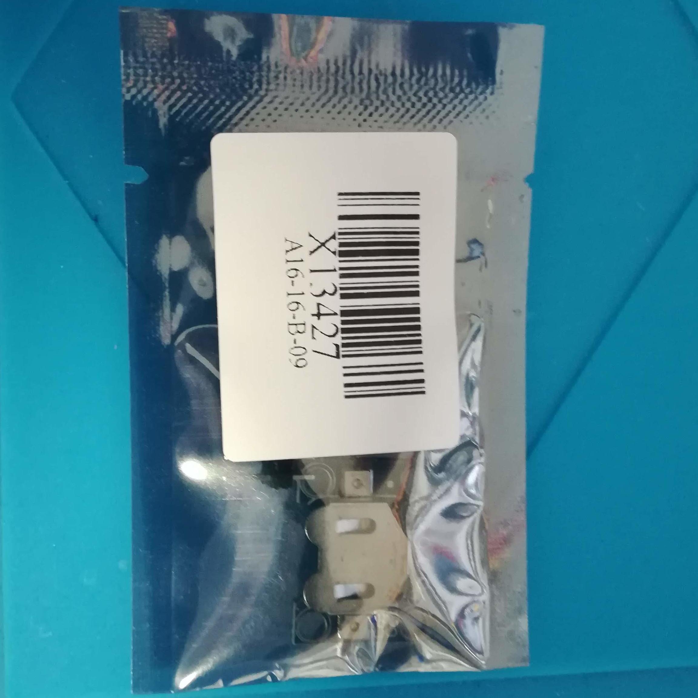 |
| ボタン電池ソケットコネクタ（4PIN） | 1 | ボタン電池ソケットのパッケージ内に同梱 |
| ネジ | 8 | 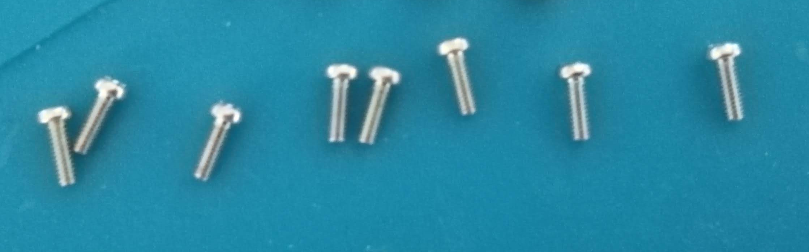 |
| スペーサー | 4 | 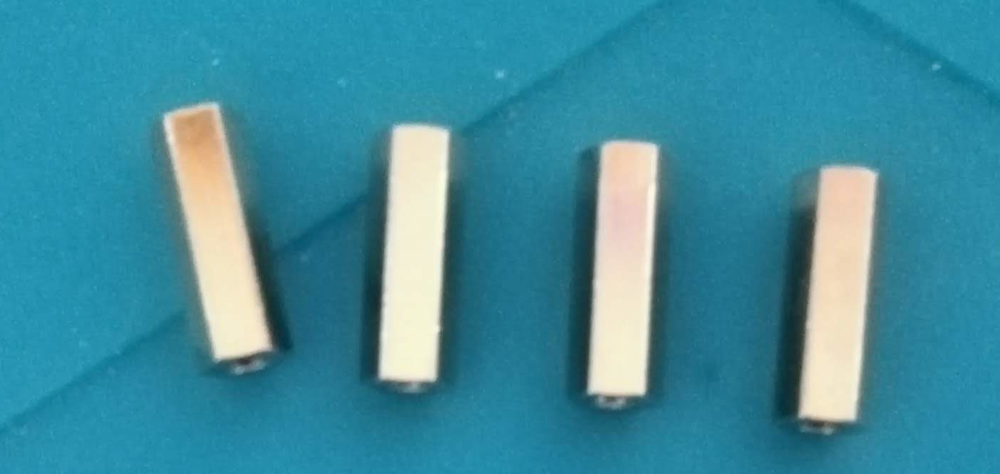 |
| アクリルプレート（スイッチ取り付け部） | 1 |  |
| アクリルプレート（PCB直上部） | 1 | 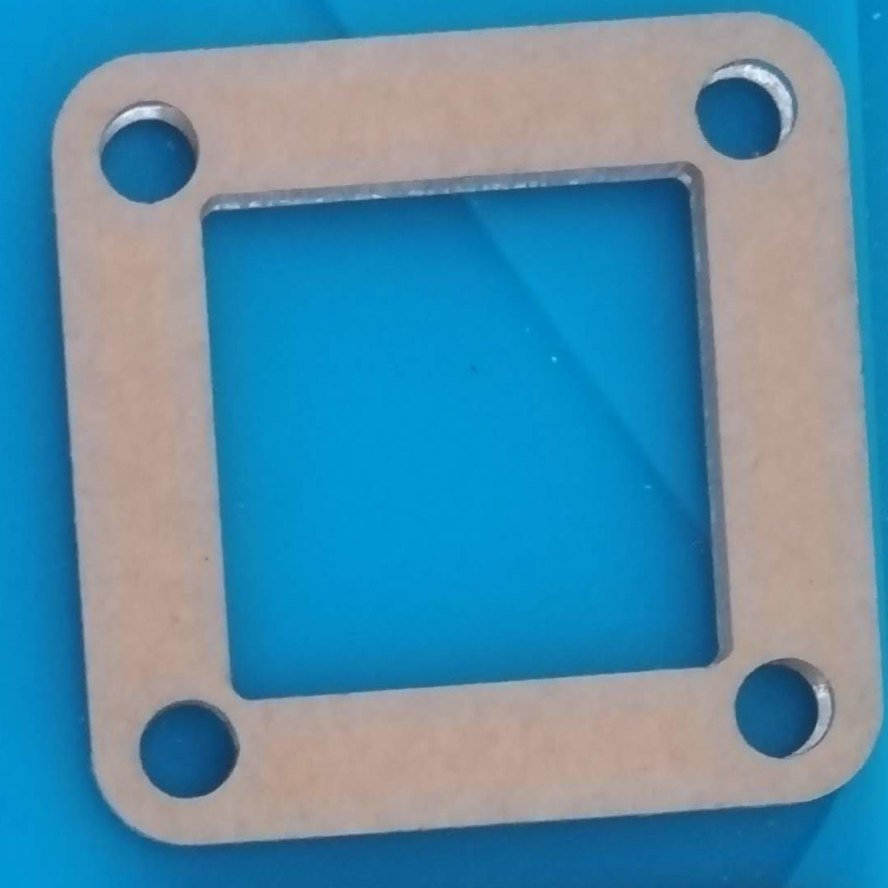厚さが3mmのほう |
| アクリルプレート（PCB直下部） | 1 | 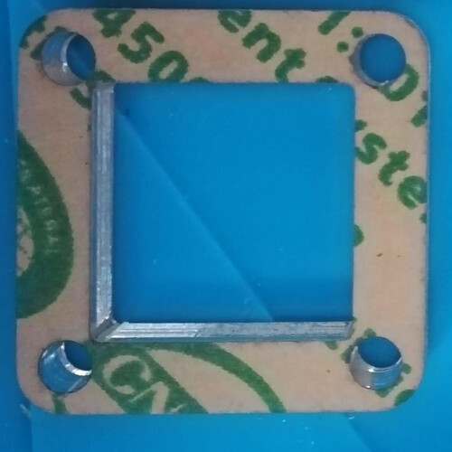厚さが7mmのほう |
| アクリルプレート（底部） | 1 | 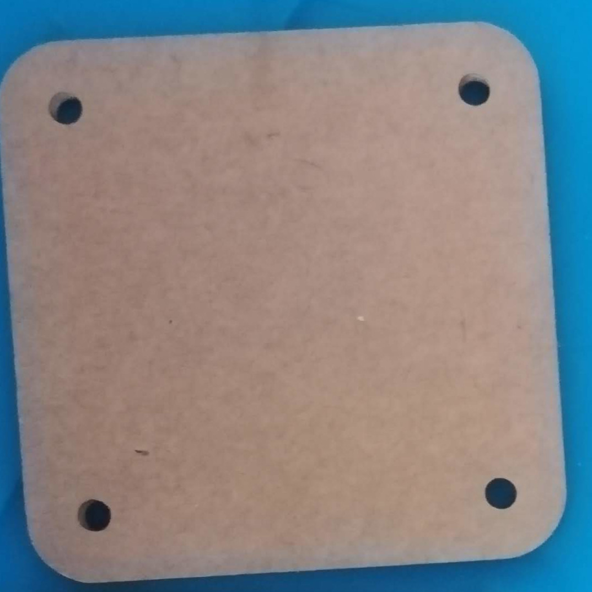 |
| ストラップ | 1 | 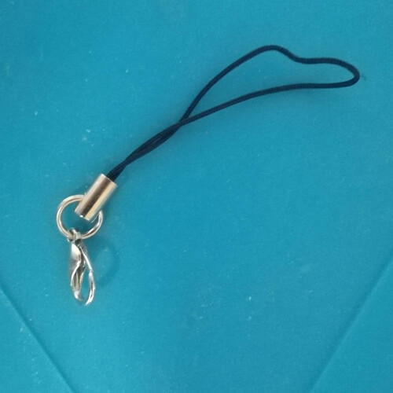 |
Note
万が一不足がある場合はBoothのメッセージにてご連絡ください。
別途容易いただくもの
以下のものは別途ご用意ください。
| 品名 | 個数 | 備考 |
|---|---|---|
| キースイッチ | 1 | CherryMXあるいはその互換スイッチのみ対応 |
| キーキャップ | 1 | キースイッチに対応するもの |
PCBの表、裏の表記について
PCBの表面、裏面の表記は以下のとおりとします。
| 表記 | 写真 | 備考 |
|---|---|---|
| 表面 |  |
キースイッチが刺さる側 |
| 裏面 |  |
ボタン電池ソケットが取り付けられる側 |
チップLEDの取り付け
チップLEDをPCBのうら面から取り付けます。
チップLEDには向きがあります。
PCBの表から見て三角の切れ込みが右側になるようにはんだ付けしてください。
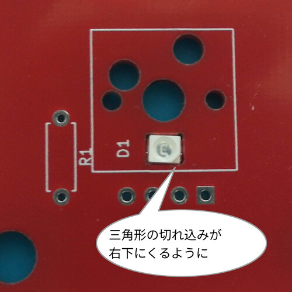

Tips
一例として以下のようにはんだ付けすると比較的楽にはんだ付けできます。
用意するもの
- 白光 ダイヤル式温度制御はんだこて FX600
- 白光 こて先 2C型
- フラックス
- 鉛入りはんだ
（はんだごて、こて先は同等品でもOK）
LEDを表面よりマスキングテープなどで固定する。
フラックスを接合させるPCB、LEDの金属面に塗ります。

温度を220℃に設定して小手先にハンダを盛ります。

PCBの金属面にハンダを持ったほうが接するようにはんだごてをあてます。
するとはんだが金属面に流れていきます。

同様にLEDの金属面に上記を行います。
PCBとLEDの接合面を撫でるようにはんだごてを動かします。
PCBとLEDにのったはんだがくっつけばOK。
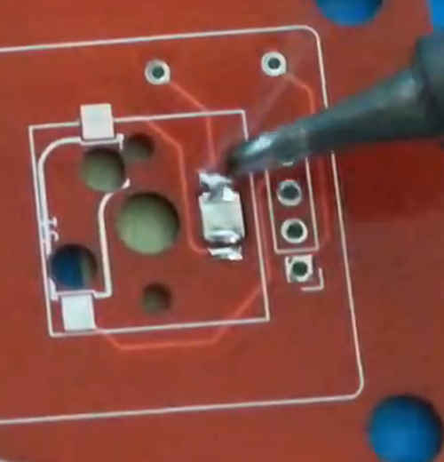
もう片方の面も同様にはんだ付けする。
Caution
チップLEDは温度に対して非常にデリケートです。高温で長時間熱すると壊れてしまうので以下の点を意識して行うことをおすすめします。
- 温度調節機能付きはんだごてで220℃程度に設定し、長時間温めない。
- 融点の低い鉛入りハンダを使用し、素早くはんだ付けする。
- フラックスを使用してはんだののりを良くする。
- マスキングテープなどでPCBの表から固定し、チップLEDが不必要に動かないようにする。
キースイッチソケットの取り付け
キースイッチソケットをPCB裏面にはんだ付けします。
キースイッチソケットにも向きがあります。中央の穴にソケットがかぶらないが正しい向きになります。
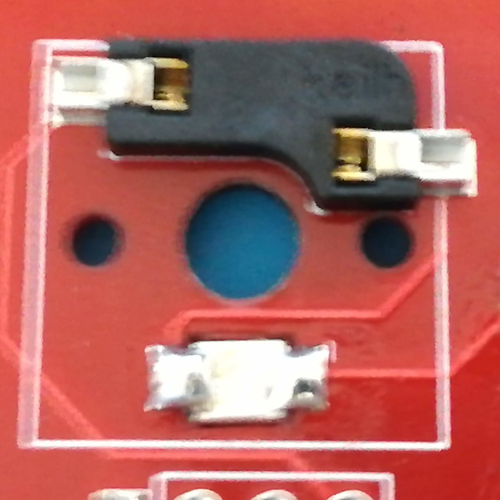
OKな例、中央の穴にソケットがかぶっていない。

NGな例、中央の穴にソケットがかぶっている。
Caution
ソケットの向きを間違えたままむりにスイッチをはめようとすると破損の原因になります。
スイッチ取付時にソケットがPCBから外れることがありますのでちょっと多めにはんだ付けすることをおすすめします。
 このくらい盛っておけば十分です。
このくらい盛っておけば十分です。
抵抗の取り付け
お買い上げいただいたチップLEDの色によって抵抗をつけるか、抵抗の足を取り付けるか異なります。
赤色チップLEDを選択した場合
抵抗をR1とプリントされている箇所に取り付けます。

赤色チップLED以外を選択した場合
抵抗の足をカットしてR1とプリントされている箇所に取り付けます。
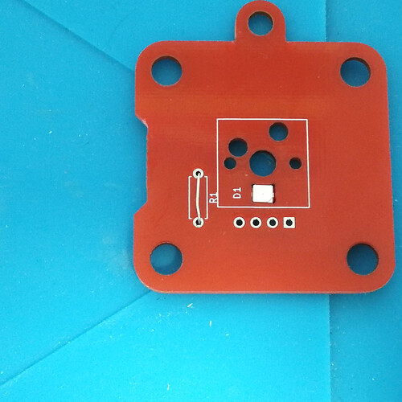
電池ソケットとコネクタの取り付け
電池ソケットの裏面からコネクタを取り付けます。
なるべくコネクタと電池ソケットが垂直になるように取り付けてください。

Warning
次の項の動作確認を行うため、PCBとコネクタのはんだ付けはまだ行わないでください。もし前項までの取り付けにミスがあった場合、修正がとても面倒になります。
動作確認
ここまでの手順に誤りがないか、ここで一旦動作確認を行います。
電池ソケットに電池を取り付け、スイッチソケットに任意のスイッチを取り付けた後、コネクタピンをPCBのうら面より接触させ、スイッチを押したときにチップLEDが光るか確認します。
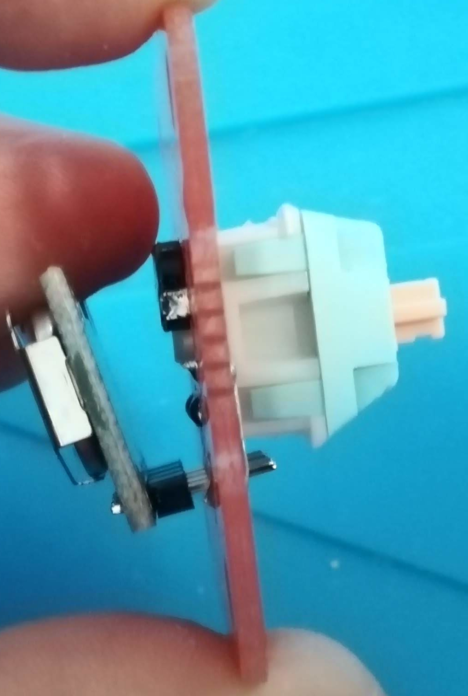

Tip
もし光らない場合は主に以下の点をご確認ください。
- チップLEDの向きが正しいか？
- PCB表面から見て三角の切れ込みが右側に来るのが正しいです。
- チップLED,スイッチソケット,抵抗のはんだ付けがちゃんとできているか？
- 電池が正しく電池ソケットに入っているか？
- スイッチはちゃんとソケットに刺さっているか？
- ピンが曲がってソケットにちゃんとささっていない場合があります。その場合はピンをラジオペンチなどで伸ばして再度ソケットにさしてください。
電池ソケットと基板の取り付け
PCBの裏面からコネクタピンを通し、PCBの表面から取り付けます。
はんだ付け後、表面に飛び出たコネクタピンは切り取ってください。
その後、電池ソケットに電池を挿入してください。


Warning
念の為電池ソケットから電池を抜いてから作業してください。
Tip
コネクタピンの高さはケースと干渉しないようにPCBの表面から3mm以下の高さになるよう切り取ってください。
ケース組み立て
アクリルプレートの保護シートを除去後
アクリルプレート（スイッチ取り付け部）
アクリルプレート（PCB直上部）
PCB
アクリルプレート（PCB直下部）
アクリルプレート（底部）の順に重ねてネジ止めします。
 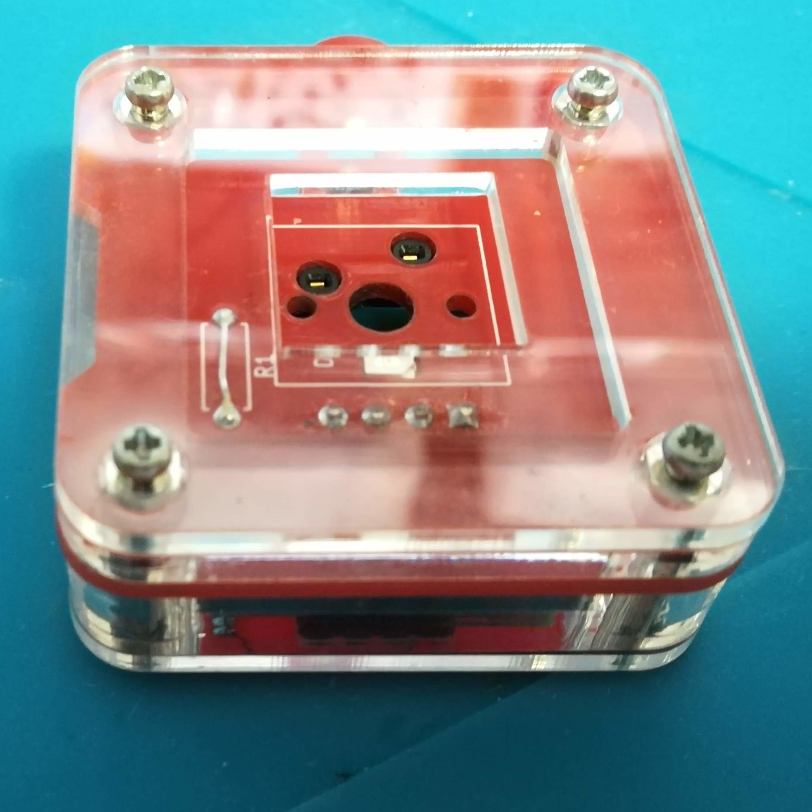
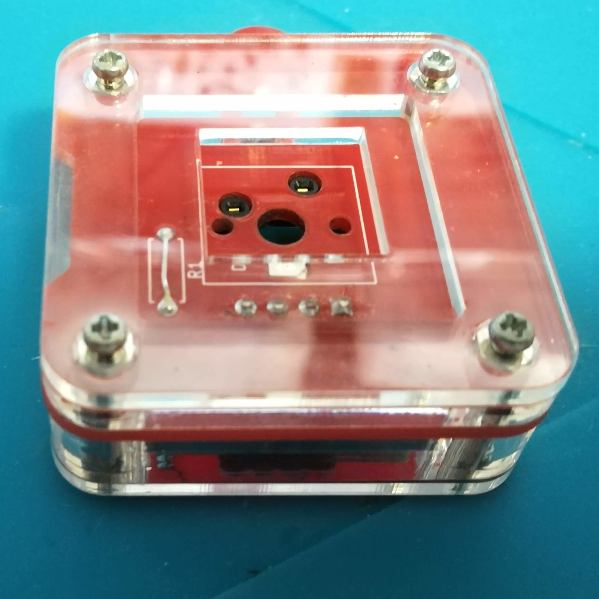
ストラップ取り付け
ストラップをPCBに取り付けます。

キースイッチの取り付け
お好みのスイッチ、キーキャップを取り付けて完成です 。お疲れ様でした。
。お疲れ様でした。
 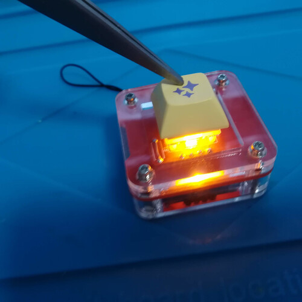
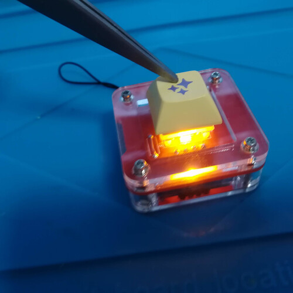